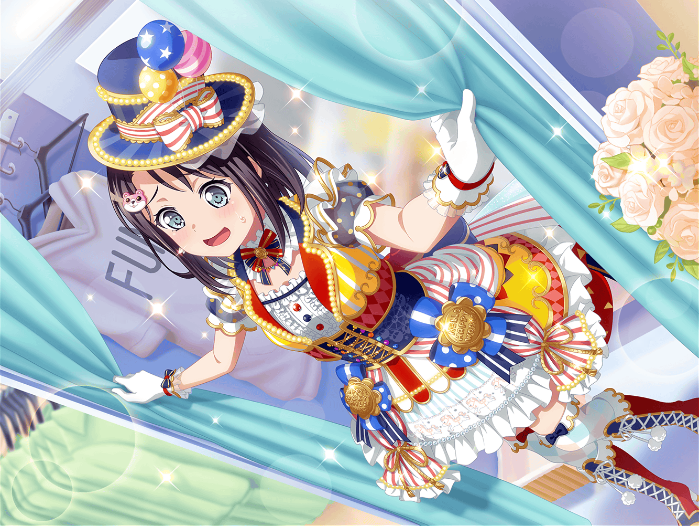

パレード終了後
花咲川スマイル遊園地 控え室
美咲
よいしょ……っと。は〜、暑かった
美咲
まさかパレードを２回もやるとは……
まあ、あたしもテンション上がってたし、実際楽しかったけど
美咲
あーあ、ミッシェルもこんなに汚れちゃって。
うわ、よく見たら顔の右側、ちょっと毛羽立ってる！？
美咲
あとで黒服さん達に、メンテお願いしておかないと。
それまでどうしよう。
さすがにロッカーには入らないしな……
美咲
寝てるよ〜って言い訳できるように、
頭乗せておくしかないか。よい……しょっと
美咲
これでよし、と。あんたもよく頑張ったよね。
おつかれ、ミッシェル
ミッシェル
……

黒服
どうかお受け取りください。『ミッシェル』です。
これから、こころさまが『ミッシェル』と呼ばれた際は、
私たちが着替えるお手伝いをさせて頂きます
美咲
――なんか、遠い昔のことみたい
美咲
しっかし、思えばあんたとも
長い付き合いになったよね
美咲
最初はまさかこんなことになるなんて思ってなかったよ。
バイトも、キグルミで風船配る仕事だってしらなかったし
美咲
おまけにそこでこころ達と出会って、
バンドやることになるなんて、想像できる方がおかしいって
美咲
あたしはただ巻き込まれただけ。
だからバンドを続けるつもりなんて、さらさらなかった。
それどころか、すぐにやめてやるって思ってたよ
美咲
でもさ、バンドを続けていくうちに
ハロハピのこと、大好きになっちゃったんだよね。
それで……それで、いつの間にか…………
美咲
あんたに、嫉妬しちゃってた
美咲
みんな、口を開けばミッシェル、ミッシェル〜って。
みんなが見てるのはあたしじゃなくて、あんたなんだもん。
そりゃ自信もなくすって
美咲
そのうち、『みんなはほんとのあたしより、
ミッシェルのほうが大事なんじゃないか』
なんて考えちゃってさ
美咲
ほんと、バカだよね
ミッシェル
……
美咲
この前ね、薫さんに言われたんだ
美咲
『どんな自分も自分』。
ミッシェルのあたしも、ミッシェルじゃないあたしも、ぜーんぶ
美咲
全部、『ほんとのあたし』……なんだってさ
美咲
…………はあー
美咲
そんなの当たり前だよね。
ああー、今思うとほんっとバカみたい
美咲
どうして、『ほんとのあたし』は
１つじゃなきゃいけないんだって思い込んでたんだろう？
美咲
『ミッシェル』も、『奥沢美咲』もほんとのあたし。
大事なのはそれだけだったのに
美咲
そんな簡単なことにも気づかずに八つ当たりして……
傷つけちゃってごめんね、ミッシェル
美咲
ずっと、あたしのそばにいてくれてありがとう。
それと……これからも、よろしくね
ミッシェル
……
美咲
おーいミッシェル、聞いてるー？
……なんてね
美咲
キグルミ相手に何言ってんだか。
さてと。そろそろみんなと合流して、後片付けしないと……
こころ
最高よ、美咲！！！
美咲
うわあっ！？ こ、こころ！？
こころ
とっても素敵なお話だったわ、美咲！
ほら見て！ ミッシェルもあんなに喜んでいるわ！
美咲
い、いや、あたしには疲れ果ててるようにしか
見えないけど……って、そうじゃなくて！
美咲
こころ、あんたいつからそこに……！？
こころ
いつから？ そうね、美咲がミッシェルに
『あんたもよく頑張ったよね』って、
言ってるあたりかしら？
美咲
それって最初からってことじゃん！
なんで声かけてくれないの！？
こころ
だって美咲、ミッシェルと大事なお話をしてたでしょう？
だからあたし、お話が終わるまで待ってたのよ
こころ
よく聞こえないところもあったけど……
ハロハピが大好きだって美咲の気持ちが、
すごく伝わってきたわ！
美咲
わー！ 改めて言わなくていいから！
美咲
とにかく！ さっきの話、みんなにはしないでよね。
こころに聞かれたってだけで、
すでにめちゃくちゃ恥ずかしいんだから
こころ
どうして？ 美咲はハロハピが大好きなんでしょう？
だったら恥ずかしいことなんてないわ！
こころ
あたしも美咲やミッシェル、それにハロハピのみんなが大好きよ！
美咲
ああ、もー……
恥ずかしいから、さっきの話は忘れてってば